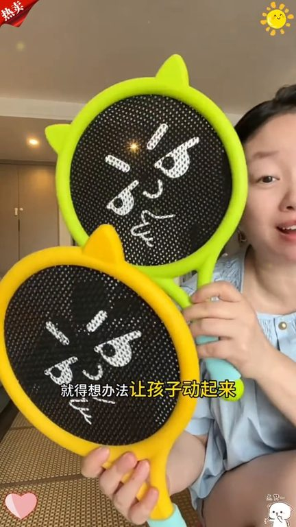
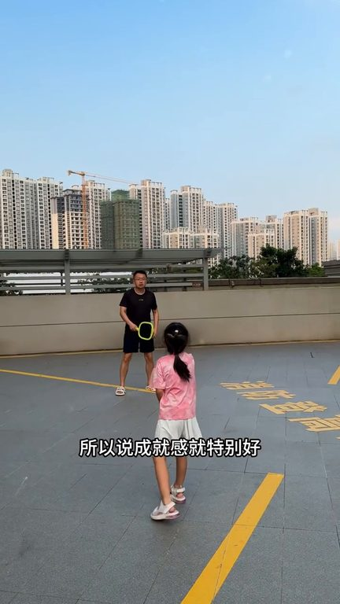
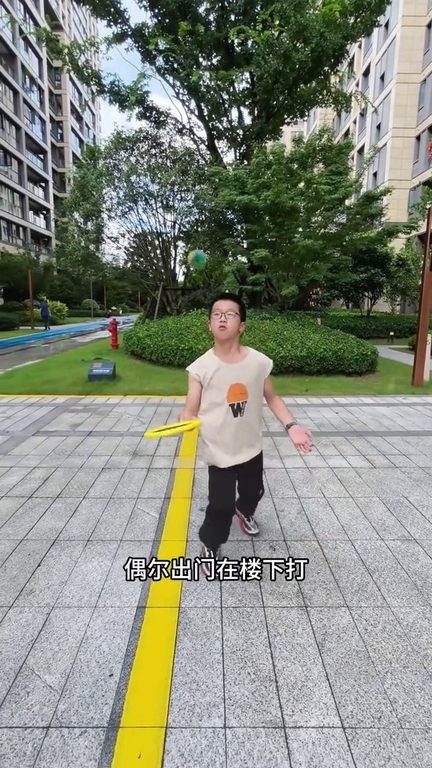
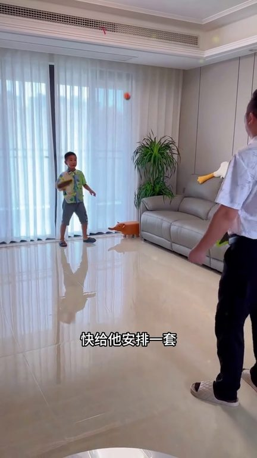

TOP 1 · 代表素材深度拆解
核心放量 稳健
视频为原始素材 HTTPS 链接；点击后加载，建议在网络环境良好时播放。
19.8万素材消耗
2.33%CTR
100.0%类目消耗占比
+0.00pp较类目均值
表现判断
该素材是类目内第 1 名，属于“核心放量”；CTR 高于类目均值。消耗体现承接规模，CTR 体现首屏与定向效率，两项应结合判断，不能仅以单指标下结论。
表达标签
口播三段式证据
开场钩子不想让孩子整天抱着手机的就得想办法让孩子动起来这个便宜楼梭的小球拍真的就是必备的到手是这样两个拍两个球孩子自己就可以癫着玩没事多陪孩子做户外活动小朋友的眼睛会跟着小球的运动轨迹在追视的过程中远近高低
中段论证很轻松就可以上手因为小朋友能接到球所以说成就感就特别好他就愿意去玩像这种他就没有什么噪音小朋友在家里也可以去玩运动量也上去了睡觉也香了家里小朋友不爱运动的可以给他试试这个在家就打的谈谈球拍一上一下锻炼孩子视觉追踪就算家里小也是可以玩起来的和父母对打也是没有问题的这个球不像别的球它是软的也不怕砸在电视机上而且还很静音隔音不好都不用担心会影响到铃区孩子也很大是网…
结尾转化也不用担心会吹飞小球游进道远游高导低起到一个很好的追视作用提升专注力的同时还能放松眼睛不管是家里还是户外都非常适合最主要的是不仅能提高孩子的运动量还能锻炼了孩子的手眼协调六到十二岁的小孩子现在正式各项能力高速发育的时候快给他安排一套和孩子玩起来吧
有效点
- CTR 2.33% 高于类目均值 2.33%，开场或人群指向具备点击优势
- 口播包含明确到手机制或直播间指令，转化路径较完整
迭代动作
- 保留当前高效钩子，复制 3 个变量版本：人物、首句和首帧分别单变量测试
- 中段每 5–8 秒补一次画面变化或证据点，避免同景口播造成信息疲劳
- 复核功效、绝对化及价格稀缺措辞；增加适用边界和效果因人而异提示
合规关注

钩子建立 · 3.5s

场景/问题展开 · 26.0s

卖点证据 · 59.9s

转化收口 · 82.4s
查看完整口播摘要
不想让孩子整天抱着手机的就得想办法让孩子动起来这个便宜楼梭的小球拍真的就是必备的到手是这样两个拍两个球孩子自己就可以癫着玩没事多陪孩子做户外活动小朋友的眼睛会跟着小球的运动轨迹在追视的过程中远近高低眼睛就非常友好他这个是状态给小朋友设计的你看他这个球拍真的是非常大玩力也很好这种防滑的短手柄很轻松就可以上手因为小朋友能接到球所以说成就感就特别好他就愿意去玩像这种他就没有什么噪音小朋友在家里也可以去玩运动量也上去了睡觉也香了家里小朋友不爱运动的可以给他试试这个在家就打的谈谈球拍一上一下锻炼孩子视觉追踪就算家里小也是可以玩起来的和父母对打也是没有问题的这个球不像别的球它是软的也不怕砸在电视机上而且还很静音隔音不好都不用担心会影响到铃区孩子也很大是网面的孩子接球就会简单一些小球还有点重量某儿出门在楼下打也不用担心会吹飞小球游进道远游高导低起到一个很好的追视作用提升专注力的同时还能放松眼睛不管是家里还是户外都非常适合最主要的是不仅能提高孩子的运动量还能锻炼了孩子的手眼协调六到十二岁的小孩子现在正式各项能力高速发育的时候快给他安排一套和孩子玩起来吧